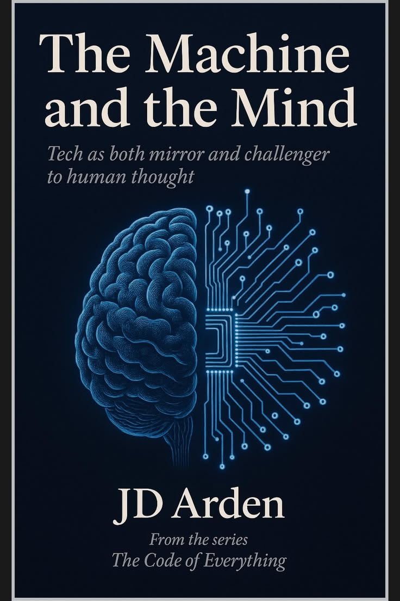

The Machine and the Mind
JD Arden
Buku ini mengajak pembaca mengeksplorasi pertanyaan mendasar: "Apakah otak kita hanyalah sebuah komputer basah?" Penulis membedakan secara kontras antara cara kerja sel neuron pada manusia dengan transistor pada mesin.